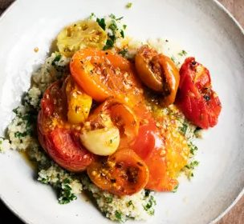

Tomato Couscous with Harissa

Before you start heat the oven to 180°C fan/gas 6.
Ingredients
For the couscous
Method
- Cut the larger 750g tomatoes in half and place in a roasting tin, tucking in the smaller ones. Add the 3 garlic cloves and 3 tbsp olive oil. Peel and slice the 1 medium red onion and add it to the tomatoes with a seasoning of salt and black pepper.
- Scatter the crushed 2 tsp cumin and 2 tsp coriander seeds over the tomatoes and onions. Roast at 180°C fan/gas 6 for 35-40 minutes until the tomatoes are soft and the skins lightly browned.
- Bring the 500ml vegetable stock to the boil. Place the 200g couscous in a heat-proof bowl, then pour the boiling stock over, cover and leave for 15 minutes. Remove the leaves from the 10g mint and 15g parsley and roughly chop.
- Use a fork to lightly crush the tomatoes so the juices bleed into the pan, then stir in the 1 tbsp harissa paste. Run a fork through the couscous to separate the grains, then stir in the chopped herbs. Serve the roast tomatoes and their juices on top of the couscous.
Notes
Harissa pastes can vary slightly in heat so I suggest starting with a tablespoon then going on from there, to suit your taste. Making this with as many varieties of tomato as I can get hold of, the vibrant scarlets and oranges bring much cheer to a grey winter day. The couscous, though softly cosseting when soaked with rust-red juices could be swapped for rice if you prefer.